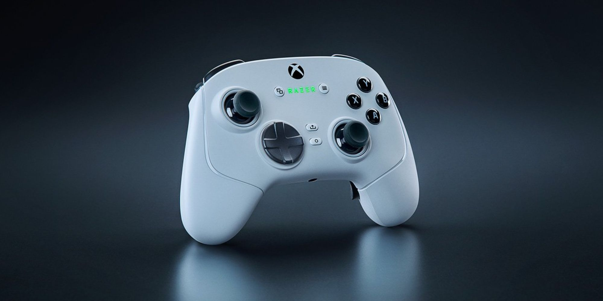

← All Guides
Best PC Game Controller 2026: What 4 Reviewers Agree On
Aggregated from 4 YouTube reviews · Updated 2026-10-03

Razer Wolverine V3 Pro
Recommended by 2 of 4 reviewers as the pro-tier standard - TMR sticks, 6 remappable buttons and near-zero wireless latency.
📊 Quick Comparison
| # | Product | Recommended By | Best For | Price |
|---|
| 1 | Razer Wolverine V3 Pro | 2/4 reviewers | Esports and pro-tier low-latency play | $199-249 |
| 2 | GameSir Cyclone 2 | 1/4 reviewers | Best value pro-style controller | $49-59 |
| 3 | GameSir G7 SE | 1/4 reviewers | Best wired all-rounder | $39-49 |
| 4 | Flydigi Vader 5 Pro | 1/4 reviewers | Feature-packed controller under $100 | Under $100 |
| 5 | 8BitDo Ultimate 2C | 1/4 reviewers | Budget drift-free controller | $24-34 |
💬 Reviewer Consensus
Common Pros
- Razer Wolverine V3 Pro: 6 remappable buttons, Hall Effect sticks and minimal wireless latency (2/4 mention)
- GameSir Cyclone 2: TMR sticks and 1000Hz polling at a $50 value price (1/4 mention)
- GameSir G7 SE: Hall Effect sticks and triggers with a reliable wired connection at $44.99 (1/4 mention)
- Flydigi Vader 5 Pro: adjustable Hall Effect stick tension at $79.99 (1/4 mention)
Common Cons
- Razer Wolverine V3 Pro: ~$200 price is steep, and battery is rated at only ~20 hours (1/4 mention)
- Flydigi Vader 5 Pro: no DirectInput support; early production batches had QC issues (1/4 mention)
- GameSir Cyclone 2: no Xbox or PlayStation console support (1/4 mention)
- 8BitDo Ultimate 2C: wired only, no wireless option (1/4 mention)
🔍 Detailed Breakdown
Razer Wolverine V3 Pro
🛒 Amazon🛒 TemuEmpire's pro pick and tested by Technopat with a polling-rate test. TMR thumbsticks, mouse-click buttons and 6 remappable inputs make it the competitive standard.
Back Paddles: 4 mouse-click back buttons + 2 claw bumpers
Battery: Approx. 20 hours (wireless)
Compatibility: PC, Xbox
Connection: 2.4GHz HyperSpeed wireless, wired USB-C
Hall Effect Sticks: Yes, TMR
Best for: Esports and pro-tier low-latency play · $199-249
GameSir Cyclone 2
🛒 Amazon🛒 TemuTechRadar's hands-on comparison winner among GameSir's lineup. TMR sticks, 1000Hz polling and deep software customization at a mid-range price.
Back Paddles: 2 remappable back buttons
Battery: Up to 40 hours (wireless)
Compatibility: PC, Switch, Android, iOS
Connection: 2.4GHz wireless, Bluetooth, wired USB-C
Hall Effect Sticks: Yes, TMR
Best for: Best value pro-style controller · $49-59
GameSir G7 SE
🛒 Amazon🛒 TemuEmpire's best wired pick at $44.99. Anti-drift Hall Effect sticks and triggers, swappable profiles and zero wireless worries.
Back Paddles: 2 remappable back buttons
Battery: N/A (wired)
Compatibility: Xbox, PC
Connection: Wired USB-C, 3m cable
Hall Effect Sticks: Yes, sticks and triggers
Best for: Best wired all-rounder · $39-49
Flydigi Vader 5 Pro
🛒 Amazon🛒 TemuReviewed hands-on by The Phrase Maker with a 9/10 score. Adjustable stick tension, dual-mode triggers and sub-5ms wireless latency at $79.99.
Back Paddles: 8 remappable extra buttons and paddles
Battery: 20+ hours (wireless)
Compatibility: PC, Switch, Android, iOS
Connection: 2.4GHz wireless, Bluetooth, wired USB-C
Hall Effect Sticks: Yes, adjustable tension
Best for: Feature-packed controller under $100 · Under $100
8BitDo Ultimate 2C
🛒 Amazon🛒 TemuEmpire's budget pick. Hall Effect sticks and triggers, remappable bumpers and turbo at a price no wireless controller touches.
Back Paddles: 2 remappable bumpers (L4/R4)
Battery: N/A (wired)
Compatibility: Windows, Android
Connection: Wired USB
Hall Effect Sticks: Yes
Best for: Budget drift-free controller · $24-34
❓ Frequently Asked Questions
Why is the Razer Wolverine V3 Pro our top pick?
It's recommended by multiple reviewers for its overall balance of performance, features, and value. See the detailed breakdown above.
📺 Video Sources
Show 4 review videos
📺
TechRadar — I've tested two of GameSir's best controllers, and, for me, there's one clear winner
Watch Video📺
The Phrase Maker — Flydigi Vader 5 Pro Review: A Controller That Has No Business Being This Good
Watch Video📺
Empire — Best Controllers For PC In 2026, Recommended By Gaming Experts
Watch Video📺
Technopat — How good is the Razer Wolverine V3 Pro, a professional esports controller for Xbox and PC?
Watch Video